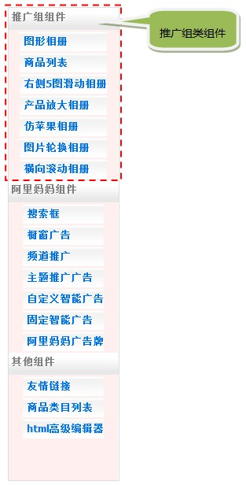
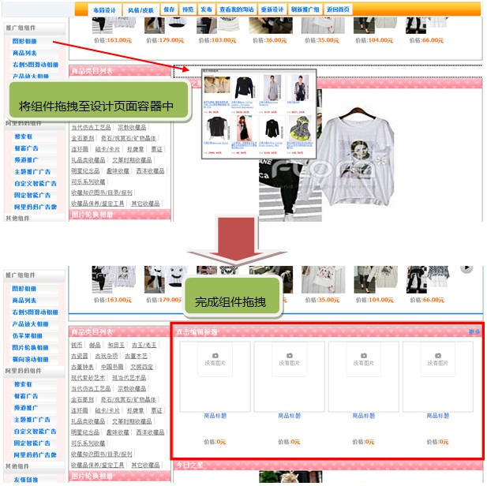
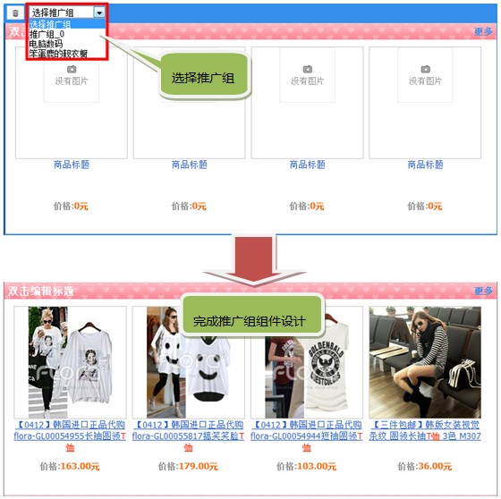

| 推广组类组件  什么叫推广组类组件？ 在新淘网，我们引入了阿里妈妈的推广组概念，淘客可以根据自己的判断创建多个推广组，并在推广组中放入不通类别的推广商品；为了方便淘客在建站时更便捷的展示推广组中的商品，我们提供了一批与推广组商品绑定的炫酷的展示类组件，在此类组件中，你只需选择你想要显示的推广组，推广组中的商品会根据组件的样式自动在组件中完成排版。 如何使用推广组类组件？ ■ 第一步，在设计器页面左侧组件栏的“推广组组件”中选择一个组件，将其拖拽至右侧页面设计容器中，如下图：  ■ 第二步，在组件左上角选择想要在此组件中展示的商品推广组，如下图：  |